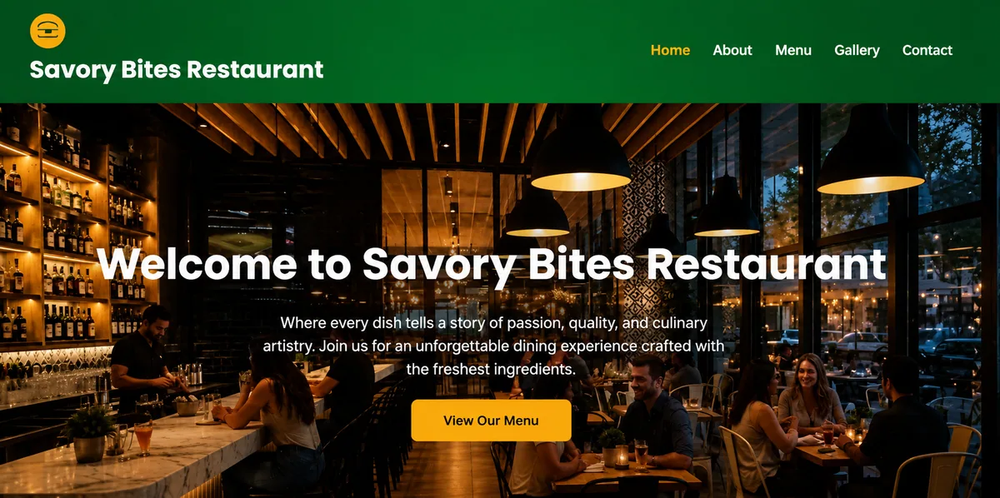

Case study 01 · Restaurant
Savory Bites
A five-page restaurant website where the hardest design problem is simple: a hungry visitor on a phone should be able to reach the menu, look at the food, and find the reservation route in a few seconds.

Project overview
Savory Bites is a restaurant website built as a small multi-page static site: index, menu, gallery, about and contact. Each page shares one stylesheet and one script, so the header, footer and mobile navigation behave identically everywhere — a guest moving between pages never has to re-learn the site.
The site is deployed and publicly viewable. Nothing about it depends on a build step, a framework or a database, which is why it stays quick on a mobile connection.
Purpose and intended audience
The audience is someone deciding where to eat, usually on a phone, often in a hurry. That shapes every decision on the site:
- Dishes lead the page. Featured dishes appear near the top with photography, because the food is the decision.
- The menu is a separate page rather than a section buried in the homepage, so it can be linked to directly and opened on its own.
- One clear reservation action closes the homepage, with the contact page carrying the enquiry form.
- Gallery and chef imagery give the visitor a sense of the room and the people before they commit.
My role and responsibilities
I designed and built the whole front end — page structure, layout, responsive behaviour, image strategy and all the JavaScript interaction. There was no separate design-to-development handoff; the layout decisions and the code are the same set of decisions.
Technical approach
The build is deliberately conventional, because conventional is maintainable and fast:
- Semantic HTML5 —
header,nav,main,section,footer, with a real heading hierarchy on every page. - Two stylesheets by concern —
style.cssholds the design system and base layout;responsive.cssholds the breakpoints on their own. Separating them means a layout change doesn’t require hunting through media queries. - ES6 JavaScript in two files —
main.jsfor interface behaviour andconfig.jsfor site data, so changing a setting doesn’t mean editing logic. - IntersectionObserver for scroll reveals instead of scroll event handlers, which keeps the main thread free.
- No framework and no build step. The site is deployed as static files, so there is no runtime to download and nothing to break between environments.
Key features and design decisions
- Mobile menu built in JavaScript with a hamburger control, matching the header layout and closing on selection.
- Scroll-spy navigation that highlights the current page section as the visitor moves down the page.
- Fade-in on scroll for section content, so long pages are easier to scan.
- Lazy-loaded imagery — food and interior photography is heavy, and the script defers it so the first screen paints quickly.
- Form field validation with inline messages on the contact form, so an enquiry is usable without a page reload.
- Back-to-top control that appears only once the visitor has scrolled far enough to need it.
- Button and image hover treatments applied through shared helpers, so interaction stays consistent across all five pages.
Responsive behaviour
The layout is built down from a single column. Content stacks in a
sensible reading order — hero, then dishes, then supporting
sections — and expands into multi-column arrangements as width
allows. The food imagery uses object-fit with controlled
crops so a portrait phone never shows a letterboxed strip of a
landscape photograph, and the menu grid reflows from one column to
several without horizontal scrolling.
The finished project
Five coherent pages, consistent navigation, and a working enquiry path — deployed and live. The source is public, so the markup, the styles and the scripts can all be read directly.